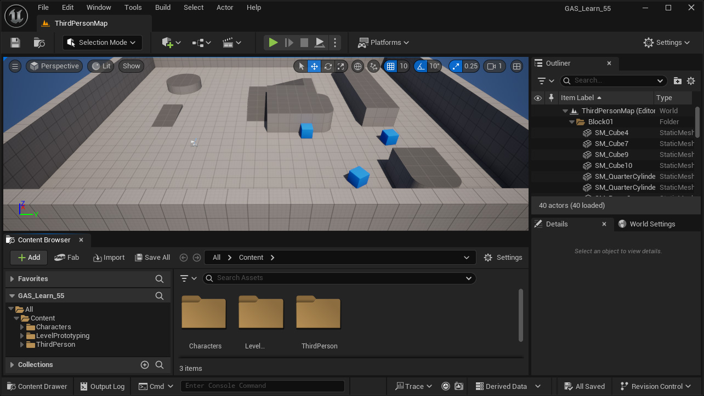
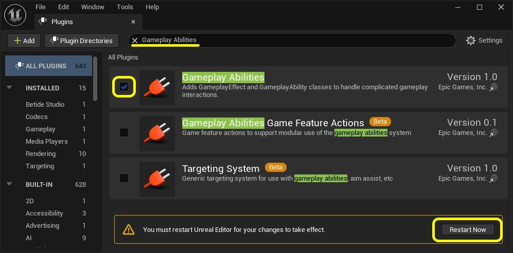
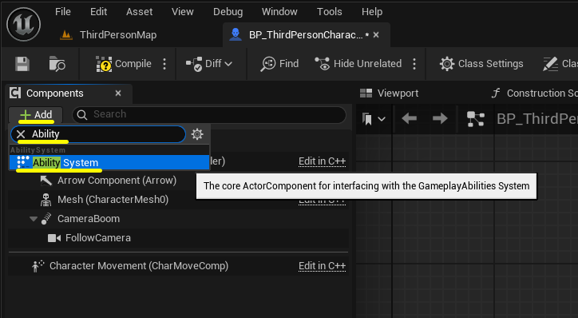

このステップのゴール
- サードパーソンテンプレートで新規プロジェクトを作成する
- GAS プラグインを有効化する
- キャラクターの Blueprint に AbilitySystemComponent を追加する
このステップは Blueprint のみで完結します。
C++ のコードを書く必要はありません。Build.cs の変更も不要です。
プロジェクトを準備する
UE エディタを起動し、「新規プロジェクト」を選択します。 カテゴリは「ゲーム」、テンプレートは 「サードパーソン」を選択してください。
プロジェクト設定では「Blueprint」を選択します （C++ は不要です）。プロジェクト名と保存場所を設定し、 「プロジェクトを作成」を押します。
移動可能なキャラクターがあらかじめ用意されているため、 アビリティの動作確認が手軽にできます。 別のテンプレートでも手順は同じです。

▲ UE 5.5 のスクリーンショットGAS プラグインを有効化する
UE エディタのメニューから 「Edit（編集） → Plugins（プラグイン）」 を開きます。 検索欄に 「Gameplay Abilities」 と入力してプラグインを探し、 チェックボックスをオンにしてください。
確認ダイアログが出たら 「Restart Now（今すぐ再起動）」 を押してエディタを再起動します。

▲ UE 5.5 のスクリーンショット
C++ コードを書かない Blueprint 専用のセットアップでは、
Build.cs に GAS モジュールを追加する必要はありません。
プラグインを有効化するだけで使えます。
AbilitySystemComponent を追加する
Content Browser（コンテンツブラウザ）からキャラクターの Blueprint を開きます。
サードパーソンテンプレートを使用している場合は
Content/ThirdPerson/Blueprints/BP_ThirdPersonCharacter です。
Blueprint エディタ左側の 「Components（コンポーネント）」パネルで 「+ Add（追加）」ボタンをクリックします。 検索欄に 「Ability」 と入力すると 候補が1件表示されるので選択してください。

▲ UE 5.5 のスクリーンショット
コンポーネントが追加されます。デフォルト名は
AbilitySystem
です。この名前をあとで参照するので変更しないでください。
Blueprint をコンパイルして保存してください。
このチュートリアルは UE 5.5 で動作確認しています。別バージョンをお使いの場合は UE 5.5 で試してみてください。
このステップのまとめ
C++ を書かずに GAS を使える状態になりました。
AbilitySystemComponent をキャラクターに追加する
だけで、Blueprint から ASC を直接参照して GAS 機能を使えます。